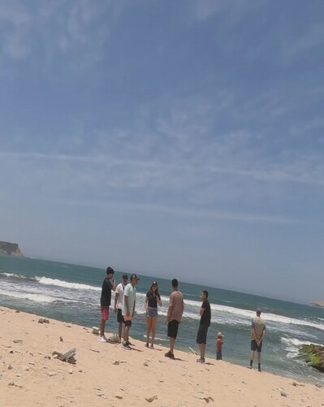

Cataratas de Caracucho
Senderos, cascadas y paisajes sorprendentes en la sierra norte del Perú.
Ver videoDesde cascadas y montañas hasta sabores y lugares urbanos, aquí encontrarás ideas para viajar, explorar y compartir historias con un toque auténtico.

Senderos, cascadas y paisajes sorprendentes en la sierra norte del Perú.
Ver video



Las Cataratas de Caracucho destacan por su energía natural, paisajes únicos y la sensación de estar lejos del ruido cotidiano. Es una ruta recomendada para quienes buscan una experiencia relajante con un toque aventurero.


Una ciudad rodeada por cordilleras, lagunas y alturas que invitan a caminar, respirar y disfrutar de la majestuosidad del Perú. Perfecta para ciudades de aventura y fotografías épicas.